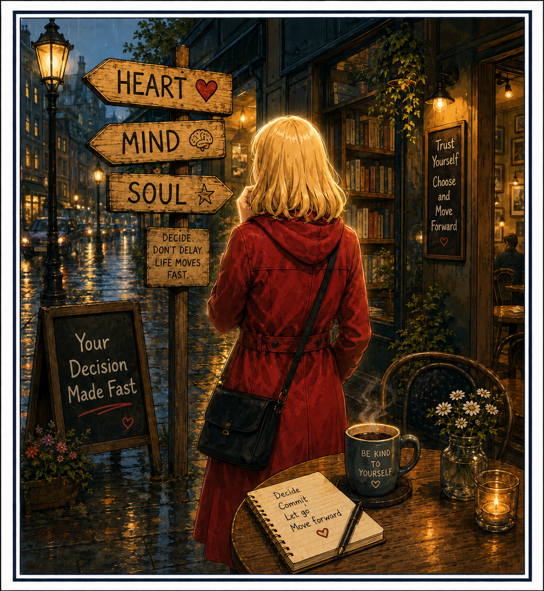

You looked into your heart and made a decision,
your mind and soul have greatly spoken,
As a working mom and loving wife,
you had no reason to throw the knife,
Which would have cut you in two and the body’s bliss is no hero’s welcome,
And though I maybe angry, I have no special healing potions or any lofty notions.
I would like to think with words unspoken that your choices made, have left me broken.
No a heartless man would break a home,
steal its throne and make no soul happy.
And I have no time left to be whole
and want to see a way around this without turning into a scoundrel,
There is no wish that could be fonder
and I know that my love for you is stronger.
So your decision made fast,
which is in truth at my cost
and of course is the least expensive route to walk on past.